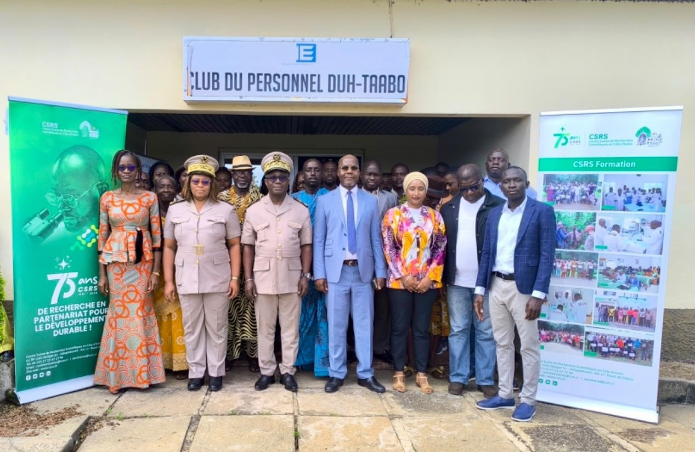
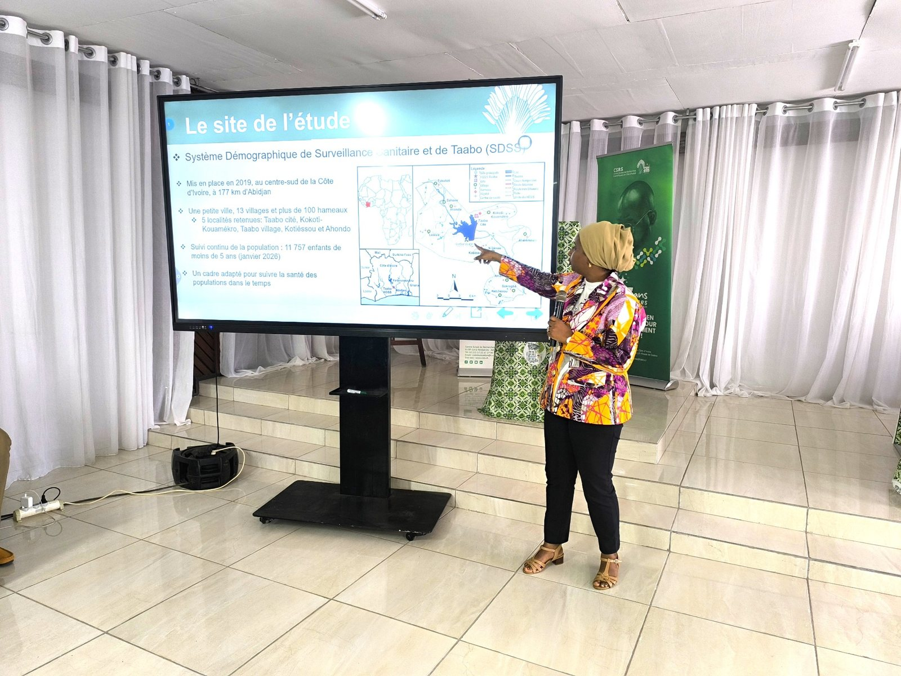

La cérémonie officielle s’est tenue au complexe CIE de Taabo, dans le centre de la Côte d’Ivoire.

Le 8 octobre 2026, le projet CAMPYLO a été officiellement lancé à Taabo. Mené en Côte d’Ivoire par l’Équipe de recherche en épidémiologie moléculaire (EREM) du Centre Suisse de Recherches Scientifiques en Côte d’Ivoire (CSRS), avec le soutien du Wellcome Trust via l’Université d’Oxford, ce projet vise à mieux comprendre les infections à Campylobacter et leurs voies de transmission, afin d’éclairer les stratégies de prévention chez les enfants de moins de cinq ans.
Les autorités et les communautés associées dès le lancement
La cérémonie, présidée par André Martin Kakou Brou, préfet du département de Taabo, a réuni une quarantaine de participants : autorités administratives et municipales, services de santé et vétérinaires, chefferies traditionnelles, associations de femmes et agents de santé communautaires.
Représentant le maire, Kocoh Jocelyne Sandra, première adjointe au maire, a souligné les bénéfices attendus pour la santé des enfants. Le Pr Jérémie Zoueu, directeur général du CSRS, a rappelé l’importance d’une recherche ancrée dans les préoccupations des populations et susceptible d’apporter des réponses concrètes. Le préfet a également encouragé la collaboration entre les équipes du projet, les services techniques et les communautés.
Comprendre les voies d’exposition à Campylobacter
Dr Kanny Diallo, investigatrice principale et coordinatrice du projet CAMPYLO, a présenté les objectifs scientifiques, les méthodes et les activités prévues. Les infections à Campylobacter constituent un enjeu de santé publique, notamment chez les jeunes enfants : les épisodes diarrhéiques répétés peuvent contribuer à la malnutrition, au retard de croissance et à des difficultés de développement.
Le projet repose sur une approche One Health, intégrant les interactions entre santé humaine, santé animale et environnement. Les recherches porteront sur les sources d’exposition, les voies de transmission et les facteurs sociaux et environnementaux susceptibles de favoriser la circulation de la bactérie.
Les activités sont prévues dans cinq localités du département de Taabo : Taabo Cité, Taabo Village, Ahondo, Kokoti-Kouamékro et Kotiéssou.

26 agents de terrain formés aux procédures de l’étude
À la suite de la cérémonie, une session de formation technique a réuni 26 participants, notamment des vétérinaires, des responsables de centres de santé, des agents de santé communautaires et des étudiants de master et de doctorat. Elle a porté sur les procédures opératoires standardisées, l’harmonisation des pratiques, la qualité des données et l’anticipation des contraintes opérationnelles sur le terrain.
Cette étape contribue à établir des méthodes communes entre les équipes et à préparer la mise en œuvre coordonnée de l’étude. Le lancement et la formation ne constituent pas encore des résultats de recrutement ou de laboratoire : les chiffres d’échantillonnage seront présentés sur le tableau de bord CCC lorsqu’ils auront été validés.
Article adapté pour le site CCC à partir du compte rendu transmis par Inès Dongo (African Science Communication Agency, ASCA). Photographies communiquées par l’équipe locale ; l’album est actuellement consultable sur Dropbox. Version française à relire par les partenaires francophones.